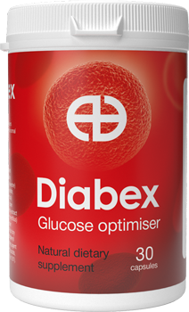

Potrivit Organizației Mondiale a Sănătății, diabetul este una dintre principalele cauze ale mortalității premature din lume.
Potrivit statisticilor oficiale, în prezent, în lume, mai mult de 425 de milioane de oameni trăiesc cu diabet zaharat. Cu toate acestea, endocrinologii estimează că cifra reală este de două ori mai mare: mulți diabetici nici măcar nu își dau seama de boala lor.
Este posibil să scapi definitiv de diagnosticul de diabet zaharat? La aceasta și alte întrebări importante a răspuns medicul șef al Institutului de diabet Maria Verdeș.
— D-na Maria, statisticile dezamăgitoare sugerează că numărul de diabetici de tip 2 este în continuă creștere. Ce legătură are și care sunt cauzele bolii?
— Anterior, diabetul de tip al doilea a fost numit pe bună dreptate diabet de obezi sau diabet de vârstnici. Principalii factori ai dezvoltării acestei boli sunt obezitatea, stilul de viață sedentar, vârsta și predispoziția genetică.
Epidemia de diabet zaharat, ca să spunem așa, este direct legată de epidemia de obezitate. Excesul de greutate afectează activitatea organelor tractului gastrointestinal și, în special, activitatea pancreasului, producând un hormon important pentru descompunerea zaharurilor – insulină.
— Există semne care ar trebui să alerteze pacientul și să servească drept motiv pentru a merge la endocrinolog?
— Da, există astfel de semne, dar se manifestă deja cu o creștere semnificativă a zahărului din sânge. Acestea includ: gură uscată, sete, urinare frecventă, slăbiciune.
Aceste simptome pot apărea după mulți ani de la începutul bolii. Creșteri mici de zahăr din sânge s-ar putea să nu se manifeste în niciun fel, cu toate acestea, astfel de afecțiuni în câțiva ani pot duce la complicații vasculare grave ale diabetului.
Prin urmare, persoanele cu risc – peste 40 de ani și supraponderali – ar trebui să fie diagnosticate în mod regulat la un endocrinolog.
— Majoritatea diabeticilor nu își imaginează gravitatea acestei boli. Spuneți-ne cum afectează diabetul organele interne, care sunt consecințele sale?
— Diabetul afectează în mod distructiv toate organele interne și sistemele unei persoane. Faptul este că vasele noastre nu sunt destinate pompării sângelui «dulce»: glucoza dăunează vaselor mici de rinichi și ochi, ducând treptat la insuficiență renală și pierderea completă a vederii.
Riscul de ateroscleroză a vaselor cerebrale și a arterelor inimii crește de zece ori. Iar leziunile vaselor picioarelor, în cele din urmă, duc la gangrena și amputarea membrelor.
— Există un remediu care să permită vindecarea completă a diabetului zaharat?
— În ultimii ani, institutul nostru, împreună cu o mare companie farmaceutică s-a angajat în dezvoltarea celui mai nou medicament pentru tratamentul diabetului de tip 2. Remediul a fost numit .
În acest moment, acesta este cel mai eficient remediu care nu are analogi.
— Cum funcționează ?
— Îmbunătățește secreția de insulină, crește sensibilitatea organismului la acest hormon, reducând rezistența la insulină. În plus, împiedică absorbția carbohidraților în intestin.
Cursul de medicament oferă o restaurare completă a funcțiilor pancreasului. Ca urmare, începe să producă suficientă insulină fără suport medical.
— Adică, după administrarea , corpul este complet restabilit?
— Da. De asemenea, toate complicațiile diabetului sunt eliminate: curăță vasele de plăci de colesterol, elimină hipertensiunea, asigură o nutriție completă a sistemului nervos. Promovează pierderea în greutate, neutralizând cea mai frecventă cauză a bolii – obezitatea. Reduce pofta de dulce prin blocarea zonelor de gust ale limbii care răspund la zahăr.
Ceea ce este remarcabil: compoziția medicamentului include numai componente naturale. În consecință, nu are absolut nici un efect negativ asupra organismului.

— Unde poate fi cumpărat ?
— este vândut în farmacii, dar va fi destul de dificil să-l găsiți: acesta este un medicament nou, deci este destul de rar. De aceea, compania-producător a creat un site unde puteți comanda la un cost de producție, fără marje ale revânzătorilor.
— D-na Maria, mulțumesc pentru un interviu informativ. Cred că ați ajutat mulți dintre cititorii noștri.
De la redacție:link-ul către site-ul unde puteți cumpăra la preţul de producţie, atașăm de mai jos.
Mama mea are diabet de 15 ani. I-am comandat , vreau ca ea să înceapă în cele din urmă să trăiască viața unui om obișnuit
Și eu sunt diabetic. M-am obosit tare de injecții nesfârșite și restricții…
Vă mulțumesc foarte mult pentru remediu!
Bunica are o mulțime de boli, iar acum un an, a fost diagnosticată și cu diabetul zaharat. Ea a fost foarte îngrijorată în această privință, plângea, se temea de complicații, amputări și dependență de insulină. Noi, nepoții, ne-am fost foarte greu să ne uităm la asta. Deci, vă mulțumesc foarte mult pentru acest medicament și articol, datorită căruia am aflat despre el. Bunica a început deja tratamentul, spune că se simte mult mai bine după primele utilizări
Întotdeauna am fost indignat de faptul că medicii caută medicamente pentru cancer, SIDA - toată lumea știu despre aceștia. Și am crezut că medicamentele pentru diabet nu ar fi de niciun interes pentru farmaciștii noștri. Am dat peste articolul dumneavoastră destul de accidental, dar sunt foarte încântat de vestea despre . Tatăl meu este diabetic, am comandat mai multe ambalaje pentru el
Băieți, a primit cineva deja coletul? Cât ați așteptat?
La mine au livrat în trei zile
Am doar 45 de ani și sunt deja diabetic. Încă nu stau pe insulină, dar încă mai iau o mulțime de medicamente zilnic, încerc să urmez o dietă strictă (ceea ce este foarte dificil), dar creșterile de zahăr se întâmplă destul de des. Mâinile îmi sunt amorțite, atât de mult încât abia îmi pot atinge degetele pe tastele computerului (sunt un programator). Această boală îmi împiedică mult să trăiesc. Mi-ați dat speranță pentru o viață plină. Am lăsat o cerere pe site-ul dvs., abia aștept să încep tratamentul
Am comandat, vreau foarte mult să încep tratamentul cât mai repede
Și eu sunt diabetic cu experiență. M-am săturat să lupt cu boala. Sper foarte mult pentru medicamentul dumneavoastră